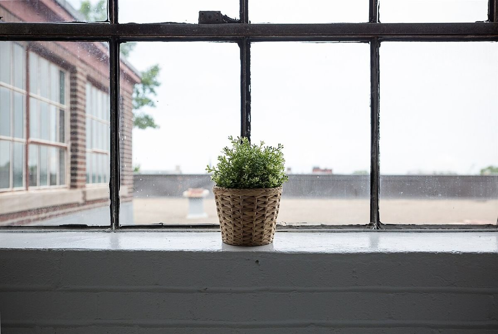
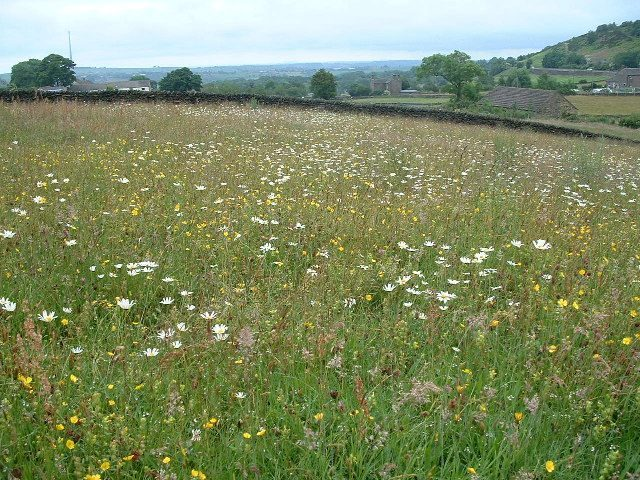

店のこと
店のこと
お店について確認できているのは、所在地とInstagramのアカウントだけです。
このページの「想像してみる」部分は、制作側が想像して書いたものです。お店の実際の様子・考え・メニューとは関係がありません。
確認できていること
- 店名は「のざわふぁーむ」、業種はカフェ
- 所在地は富山県南砺市梅原8565(〒939-1716)
- 電話番号はなし。連絡はInstagramから
- 営業時間・定休日・メニュー・価格・ご予約・駐車場は準備中

想像してみる
屋号を、文字の数で眺める
のざわふぁーむ
書くと7文字、読むと6拍。「ふぁ」は2文字で1拍です。
屋号の由来は分かりません。制作側は、ひらがなばかりの屋号のやわらかさと、真ん中にひとつだけ小さな字がある面白さに注目しました。どんなお店なのかは、ここでは決めつけず、Instagramで確かめていただく形にしています(実際のお店の姿ではありません)。


